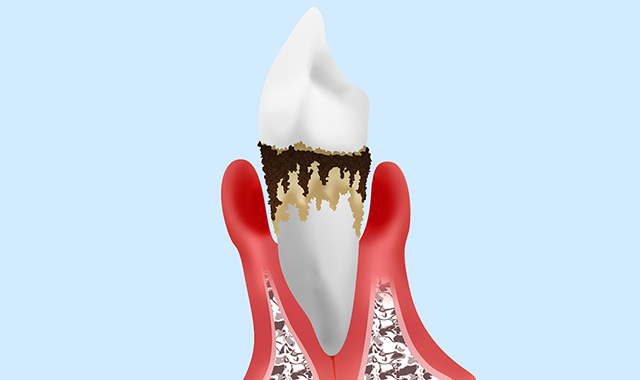
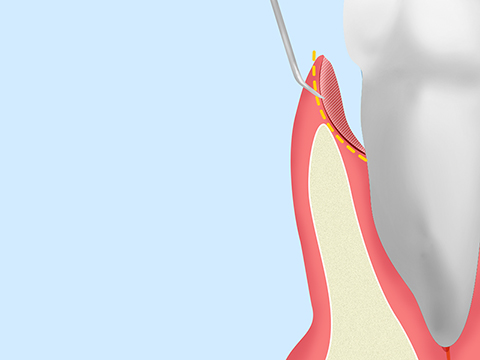
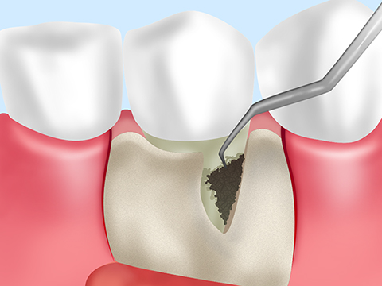
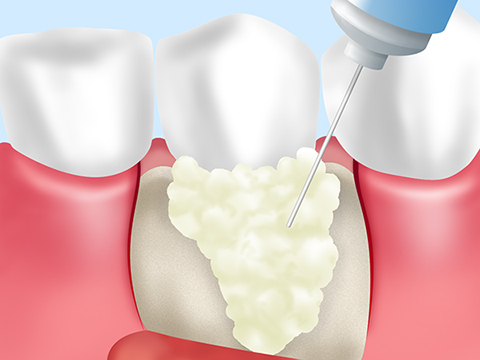
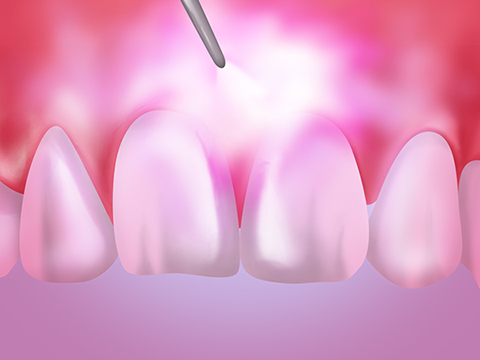
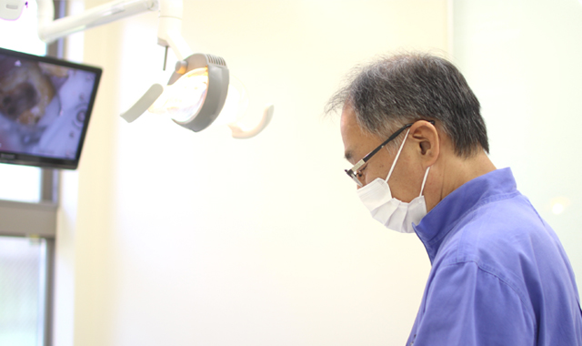

歯ぐきが腫れる・血が出る～歯周病～
千歳船橋駅から徒歩3分の場所にある歯医者「中村歯科医院」では、歯周病の治療も行っています。歯周病は初期の自覚症状が少なく、気付いたときには重症化していることが少なくありません。ここでは、歯周病のチェックポイントと、当院における5つの治療法を合わせてご紹介します。
歯周病とは？

歯ぐきの腫れや出血の症状は、歯周病のサインかもしれません。歯周病はプラーク（歯垢）内で繁殖する歯周病菌によって、歯ぐきや顎の骨に炎症を起こします。歯周病の初期段階では自覚症状が少なく、発症すると少しずつ歯を支える骨を溶かしていき、放置しておくと歯が抜け落ちてしまうことがあります。日本人が歯を失う原因の1位であり、30歳以上の約80％が歯周病になっているか、その予備軍とされています。
歯周病を放置すると全身疾患を招く恐れも
歯周病は歯周病菌に感染することで発症する病気です。症状が悪化すると歯周病菌が血液を介して体内へと運ばれ、臓器に影響を与えることにより、全身疾患のリスクを高める原因になります。とくに、歯周病にかかると糖尿病を悪化させ動脈硬化のリスクを高めるため、心筋梗塞や脳梗塞を発症する可能性が高くなります。また、妊娠中の女性の場合は低体重児の出産や早産のリスクもあります。
歯周病チェックシート
歯周病ではないかという疑問が浮かんだら、次のチェックシートをご覧ください。下記の項目に一つでも当てはまる場合は歯周病の可能性があります。一度、当院までお越しください。
- 歯ぐきが腫れている
- 歯を磨くと血が出る
- 最近、口臭が気になる
- 歯が長くなったように見える
歯周病の検査方法

当院では歯周ポケット検査と歯の動揺度検査を行っています。検査結果は印刷をし、患者様へお渡しをしているため、自分の検査結果を確認することができます。
歯周病の治療法
歯周病は早期に治療できればしっかり治すことができる病気です。当院では歯周病に対して5つの治療法を実践しています。
スケーリング・ルートプレーニング


スケーラーという先端のとがった器具を使い、歯と歯ぐきの隙間の歯周ポケットからプラーク（歯垢）や歯石を除去する治療がスケーリングです。さらに、キュレットという専用器具を用いて、歯ぐきの奥深くに入り込んだ歯石を除去する治療がルートプレーニングです。スケーラーで削り取った歯ぐきの部分をなめらかに仕上げ、プラークの再付着を防ぎます。
歯周ポケット掻爬（そうは）術

歯周病が進行し、歯周ポケットが深くなっている場合に行います。局所麻酔を施した後に、歯周病が進行した歯ぐきの一部を切除し、歯石や膿とともに取り除きます。
フラップ手術

歯周病が中等度以上進行した場合は外科処置を行います。歯周病が進行した部位の歯ぐきを切開し、露出した歯根に付着したプラークや歯石に対して目視で取り除きます。
再生療法

歯周病によって溶かされた顎の骨と歯ぐきを再生させる治療です。溶かされた骨の部分に薬剤や人工骨を入れることで、歯周組織の再生を促します。
レーザー治療

レーザーの光と熱によって歯周ポケット内の汚れを取り除くとともに滅菌。歯周ポケットを浅くして治癒させます。出血を伴わない治療方法で、個人差はありますが治癒までの時間を短縮できます。
医院長からのメッセージ～歯周病の完治には早期発見・早期治療がカギを握っています～

歯周病は自覚症状が少なく、気付いたときには重症化していることも珍しくありません。進行すると完治させるまで治療に時間がかかってしまうため、早い段階で発見することが重要です。早い段階なら簡単な処置で済むため、歯ぐきの腫れや出血、口臭など口腔内の異常を感じた方は、一度当院へご相談にいらしてください。